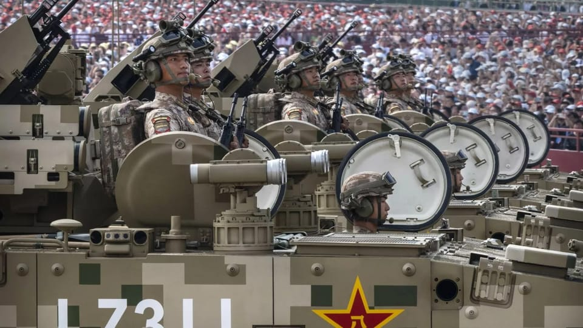

世界苦茶09月05日新闻 | 33条 | 中国驳斥欧盟称中国正在建立专制联盟

中国驳斥欧盟称中国正在建立专制联盟 | 他信已经再次离开印度 | 韩国日本密切关注中朝俄联盟 | 比亚迪下调年度销售目标16%
苦茶数据
美元兑人民币：7.13（昨日7.14，前日7.14）
美元兑日元：148.20（昨日148.19，前日148.49）
上证指数：3781（昨日3745，前日3813）
标普500指数：6502（昨日6448，前日6415）
比特币：111692（昨日110645，前日111277）
布伦特原油：66.85（昨日67.13，前日68.06）
中国新闻
• 王毅表示，中匈合作堪称典范 ：中国外长王毅与匈牙利外长西雅尔多会面时说，中匈合作的成功故事表明，中欧是伙伴不是对手，完全可以相互借鉴，相互成就。据中国外交部网站，王毅星期四在北京与赴华出席纪念中国人民抗日战争暨世界反法西斯战争胜利80周年活动的西雅尔多会面。他说，在两国领导人战略引领下，中匈弘扬传统友谊，深化务实合作，双边关系处于历史最好时期。中国愿同匈牙利增进战略互信，深化务实合作，不断丰富中匈新时代全天候全面战略伙伴关系内涵。
• 中方驳斥欧盟“专制联盟”说 ：对于欧盟外交官称中国、俄罗斯和朝鲜领导人九三阅兵同框象征“专制联盟”形成的言论，中国外交部批“十分错误极不负责”，是在抱持冷战思维和严重意识形态偏见，刻意制造对抗分裂。中国外交部发言人郭嘉昆星期四在例行记者会上做出以上答复。他称欧盟有关官员的言论充满了意识形态偏见，缺乏基本历史常识，公然鼓噪对立对抗，既是对二战历史的不尊重，也损害欧方自身利益，十分错误极不负责。中方对此坚决反对，强烈谴责。他指出，在中国人民抗日战争期间，俄罗斯、美国以及一些欧洲国家的友好人士都向中国人民抵抗侵略提供了宝贵的援助和支持。
• 澳籍华人杨兰兰车祸案进展 ：澳大利亚华裔女子杨兰兰豪车车祸案再有新进展。据澳媒报道，她面临两项新指控，其中包括未向警方提供个人信息。据《澳洲人报》报道，杨兰兰涉嫌于7月27日凌晨驾驶劳斯莱斯休旅车发生车祸，上个月在悉尼唐宁中心地方法院提审，吸引大批民众到场围观。警方称，事发时杨兰兰正驾驶车辆，撞上由电台名嘴桑迪兰兹的司机驾驶的货车。杨兰兰在车祸中并未受伤，她最初被控以不当行为造成人身伤害，以及拒绝或未能接受酒精呼气测试。随后，她又被追加两项指控，包括危险驾驶致人重伤，以及未向警方提供个人信息。若罪名成立，杨兰兰最高可能面临七年监禁。据澳洲SBS、《中国新闻周刊》和凤凰网此前报道，杨兰兰交通肇事案8月15日在悉尼唐宁中心地方法院首次提审，庭审全程仅约10分钟。她的律师当时说，目前无法对指控作出是否认罪的答辩。法院将案件延后至9月26日再审。
亚太印太新闻
• 泰国王室拒绝解散议会请求 ：泰国代首相蓬探证实，王室官员已拒绝执政的为泰党提出的解散议会的请求。国民议会解散将使得泰国必须提早举行选举，但法新社引述蓬探星期四通过社交媒体脸书发布的信息说，由于“存在法律争议”，枢密院办公室已告知他“此时向国王提交解散议会的御令草案不合适”。枢密院是负责审查和提供王室事务建议的机构。消息说，枢密院的意见是看守政府无权提议解散国会。 （翻评：为泰党被泰国王室抛弃。接下来人民党的策略非常重要。）
• 泰前首相达信再度出国 ：据消息人士和泰国媒体报道，泰国颇具影响力的前首相达信已在星期四晚间离开泰国。泰国议会定星期五选举下一任首相，而法院也可能会作出判决，判处达信入狱。这名亿万富翁曾自我流放15年。他的离开正值他所创立的执政党为泰党的联合政府陷入动荡之际，为泰党在星期五的选举前面临着来自竞争对手的重大挑战。下个星期二，最高法院将就一起涉及达信的案件作出裁决，此案可能导致他入狱。此前，他曾因健康原因在医院度过了整个拘留期，避免了牢狱之灾。
• 马来西亚拟撤离印尼学生 ：马来西亚高等教育部长赞比里说，如果印度尼西亚部分地区的骚乱持续恶化，政府将采取主动措施，包括安排马国学生撤离返国，以确保安全。赞比里星期三在新闻发布会上指出，马国教育部通过印尼的马来西亚教育办事处，与马国外交部保持紧密合作，持续监督印尼的局势发展。他说：“目前约有1200名马国学生在印尼求学。若情势恶化，我们有责任采取行动，包括安排撤侨返国。事实上，我们已经持续进行监控，并与外交部保持密切合作。”
• 印尼前教育部长涉贪案 ：印度尼西亚总检察长办公室将前教育部长、网约车公司Gojek联合创始人纳迪姆·马卡里姆列为涉嫌不当采购笔记本电脑的贪污案嫌疑人。路透社引述总检察长办公室调查员努尔卡约·琼孔·马迪奥星期四发布的消息说，纳迪姆曾于2019年至2024年领导教育部，他被指控参与采购谷歌Chromebook笔记本电脑，供其部门和学生使用。2021年4月前总统佐科改组内阁后，原任教育与文化部长的纳迪姆出任合并后的教育、文化、研究与科技部长。
• 日本密切关注中俄朝互动 ：中国在北京天安门广场举行了隆重纪念抗日战争胜利80周年的仪式，日本密切关注中国、俄罗斯及朝鲜的互动。同时，日本也关注中国正在加速部署新锐航空母舰、战斗机、高超音速武器等。日本内阁官房长官林芳正在新闻发布会上说：“政府一直密切关注事态发展，但我们无法评论中方的意图。” 他指出，日本会坚守走和平国家道路，不让战争重演。林芳正说：“日本自战后以来始终走和平国家道路，决心不再重演战争的恐怖。我们已多次向中方强调这一立场。此外，日中双方已确认了全面推进基于共同战略利益的互惠关系、通过共同努力构建建设性稳定关系的大方向。”
• 韩国关注朝中俄“铁三角” ：韩国统一部周四就朝中俄领导人同框中国九三阅兵，向国际社会彰显“铁三角”关系一事说，韩国政府将为应对所有可能性做好准备，同时致力于实现朝鲜半岛无核化与和平。朝鲜领袖金正恩、中国国家主席习近平和俄罗斯总统普京星期三并肩亮相北京天安门城楼，一道出席纪念抗日战争胜利80周年大阅兵。韩联社报道，韩国统一部人士评价认为，从朝中俄领导人“同台”现身的场面来看，今后反美联盟力量可能进一步加强。统一部也有人士分析认为，朝鲜或基于与中俄更为密切的关系，尝试与美对话。
• 韩国推50万无人机士兵计划 ：韩国国防部长官安圭伯周四表示，将推进50万无人机战士培养项目，加大官兵无人机培训力度。安圭伯当天在位于韩国江原道原州市的陆军第36师出席“小型无人机、反无人机试点部队”指定仪式时作出如上表述。该部队将负责验证能否将民用无人机系统投入作战现场使用，让官兵熟练掌握新型无人机操控技能，并基于相关经验制定无人机战术和指南。上述培养项目的核心是大量引进实现关键零部件国产化的无人机教练机，使全体官兵积累无人机飞行操作经验并轻松考取无人机执照。国防部为此编制 205 亿韩元预算。
科技新闻
• 马来西亚促TikTok限未成年 ：由于现有方式无法限制13岁以下人士使用社交媒体平台TikTok，马来西亚通讯部呼吁TikTok提供有效的机制。马来西亚通讯部长法米星期四说，TikTok接获指示与警方和马来西亚通讯及多媒体委员会商讨此事。他星期四与TikTok管理层、警方和通讯委会在武吉阿曼警察总部会面后对媒体说：“我们发现在社交媒体平台包括TikTok发生的问题，就是13岁以下儿童使用社媒，这在社区指南中是禁止的。”
• 美批准SpaceX大幅增发射 ：世界上飞行次数最多的火箭可能会开始更频繁地发射。美国监管机构已完成一项关键的环境评估，为 SpaceX 将佛罗里达州卡纳维拉尔角太空军基地的猎鹰 9 号发射次数增加增加一倍以上铺平道路。除了将年度发射量从50次增加到最多 120次外，联邦航空管理局的环境评估还批准了新的现场着陆区，该着陆区每年可容纳多达34次助推器着陆。这些助推器是猎鹰 9 号火箭可重复使用的第一级部分， SpaceX 将其回收并且翻新用于后续发射。周三最终确定的评估报告得出了无重大影响的缓解结论，这意味着根据联邦法律，拟议的变更不会对人类环境质量产生重大影响并通过具体保护措施可降低影响。
• 美军签约AI随身作战系统 ：美国士兵正开始将AI装在口袋和背包里，这源于美国陆军与一家旧金山初创公司签订的一份价值9890万美元合同。与TurbineOne签订的合同反映了现代战场的双重现实：无人机和AI已将作战节奏提升至惊人的速度，而无处不在的信号干扰使得在前线收发数据变得很困难。TurbineOne的软件可在士兵的笔记本电脑、智能手机和无人机上运行，无需稳定的云连接。这款AI应用程序让单兵能够快速识别无人机发射场或隐蔽部队阵地等敌方威胁，并获得必要的背景信息以决定如何应对，而无需依赖数英里外的分析师。
瑞士发布开源大模型 ：人工智能竞赛出现了新参与者，这次是一整个国家。瑞士正式发布了国家级开源大语言模型 Apertus，希望其能成为OpenAI等企业所提供模型的替代选择。“Apertus” 源自拉丁语，意为 “开放”，该模型由瑞士洛桑联邦理工学院、苏黎世联邦理工学院以及瑞士国家超级计算中心研发，这三家机构均为公共机构。瑞士研发团队将 Apertus 设计为完全开源模式，用户可查看其训练过程的各个环节。除模型本身外，团队还同步公开了训练过程的完整文档、源代码，以及所使用的数据集。 Apertus 的研发严格遵循瑞士数据保护法与版权法，对于希望遵守欧洲相关法规的企业而言，它或许是更优选择之一。
• 字节澄清晶片团队未注销 ：网传字节跳动注销整个晶片团队权限，并将业务从集团独立。公司澄清相关消息不实，并指晶片业务主体从未发生变化。综合澎湃新闻和《证券时报》报道，有传言称，字节跳动整个晶片团队权限被注销，业务从集团独立，甚至将来可能以新加坡公司的壳子运行，且未向员工提供“N+1”赔偿。传闻还称，相关变动涉及整个晶片团队，而不仅限于AI晶片业务。
• DeepSeek研发新AI模型 ：彭博社引述知情人士称，中国人工智能公司深度求索正开发一款具备更先进代理功能的AI模型，以与OpenAI等美国同行竞争。知情人士称，DeepSeek正在构建一款AI模型，希望能在用户极少指示的情况下，替用户执行多步骤操作。知情人士说，系统还能基于先前的操作进行学习和改进。知情人士还说，DeepSeek创始人梁文峰正督促团队在今年最后一个季度，推出这款新软件。
• 中企持续采购英伟达晶片 ：四名了解采购讨论情况的人士称，尽管北京监管机构强烈劝阻国内企业购买英伟达人工智能晶片，但阿里巴巴、字节跳动及其他中国科技公司仍然兴趣浓厚。路透社引述两名知情人士称，这些科技公司希望确保英伟达H20晶片的订单能够得到处理，H20晶片在7月重新获准在中国销售；同时，它们也在密切关注英伟达推出性能更强大晶片的计划。这款晶片暂定名为B30A。两名知情人士说，如果华盛顿批准销售B30A晶片，其售价可能会是H20晶片的两倍。H20晶片目前的售价在1万至1.2万美元之间。
• 谷歌被判支付4.25亿赔偿 ：美国旧金山联邦法院陪审团星期三裁定，美国科技巨头Alphabet旗下的谷歌公司因持续搜集已关闭追踪功能用户的资料，构成隐私侵害，需支付4.25亿美元赔偿金。此案涉及近9800万名用户与1.74亿台装置。陪审团认定，谷歌在三项隐私侵害指控中有两项成立，但未认定谷歌具有“恶意”，因此不需支付额外惩罚性赔偿。对此，谷歌发言人证实判决结果，并重申公司否认不当行为。谷歌周三在庭上辩称，搜集的资料属“非个人化、化名化”，并储存在加密及隔离的伺服器中，无法直接对应特定帐号或个人身份。但陪审团最终仍认定其行为违反用户隐私保障。
财经新闻
• 特朗普签署总统令，对日汽车关税降至15％： 9月4日，美国总统特朗普签署了一项与日美贸易协议相关的总统令。美国白宫宣布了这一消息。总统令的内容包括，将目前25％的汽车关税率下调至12.5％，加上现有的2.5％税率，合计为15％。日美双方7月就下调汽车关税达成协议，日本方面此前一直要求尽快实施。总统令的内容将在刊登于联邦公报的七天内公布详情。
• 小红书估值升至310亿美元 ：在近期通过一只大型基金完成的交易中，小红书的估值在短短三个月内飙升了19%，达到 310 亿美元，凸显出投资者对于这家中国版 Instagram 的强烈投资需求。这一估值是通过金沙江创投管理公司旗下一家投资工具分发的投资组合文件中披露的，该文件记录了2025年上半年该基金份额的变更情况。根据查阅的文件，截至六月底，小红书占该基金总资产的92%，较上一季度略有上升。计算显示，该投资组合的账面净资产价值意味着小红书的估值较截至3月季度时的260亿美元大幅跃升。小红书今年崛起，成为TikTok的有力竞争对手，而TikTok面临禁令。
• 香港建造业失业率升至7.2% ：香港建造业工人失业率升到7.2%，工程开工量悬崖式下跌，一季度同比大减八成。据《星岛日报》报道，香港建造商会会长廖圣鹏星期四在电台节目上说，建造业失业率较高与私人工程减少有关，受影响主要是年纪较大工人及低技术工种。他说，除非政府卖地或私人市场有大幅改善，否则失业率短时间难有大改变。
• 比亚迪下调年度销量目标 ：路透社引述两名知情人士说，中国电动车巨头比亚迪已将今年的销售目标下调多达16%，至460万辆。这家中国最大的汽车制造商在今年3月向分析师说，2025年的销量目标为550万辆。但知情人士透露，在过去几个月，这一目标已在比亚迪内部多次下调。知情人士称，比亚迪已于上个月向公司内部及部分供应商传达最新销量目标，至少为460万辆，以便指导规划。
• 中国监管拟为股市降温 ：知情人士说，中国金融监管机构愈发担忧8月初以来股市高达1.2万亿美元的涨势过快，正考虑出台一系列降温措施。彭博社星期四引述知情人士报道，最近几周提交给最高决策层的措施包括取消部分卖空限制。当局还在考虑抑制投机交易的方案，担心市场若出现大幅波动，可能会导致散户投资者蒙受巨大损失。2015年中国股市暴涨暴跌的情景仍历历在目，中国官员正力图推动更为稳健的股市涨势，以提振经济和消费者信心。这一轮讨论也恰逢中国在星期三举行九三阅兵，政府往往会在重大国家活动前后寻求维持资本市场的稳定。
• 宜家承诺在华推低价产品 ：面临中国国内零售业激烈竞争、消费支出疲软和房市降温等挑战，瑞典家居品牌宜家承诺2026财年投入1.6亿元人民币在中国市场推出更低价产品。中国第一财经报道，宜家中国星期二举行2026财年启动会，明确在2026财年计划投入1.6亿元，聚焦和推广150款价格更低的产品，其中70%的投资将集中在最受消费者喜爱的畅销产品上。新财年里，宜家中国拟推出超过1600件家具及家居新品、23个新品系列等。在过去两个财年，宜家中国已累计投资6.73亿元推出更多价格更低产品。
• 美未对华实施二级制裁 ：美国驻北约大使惠特克说，美国暂未因中国支持俄罗斯侵略乌克兰而对华实施二级制裁，是因为美中两国之间更广泛贸易谈判仍在进行。特朗普此前威胁，除非基辅和莫斯科达成协议结束俄乌冲突，否则将对购买俄罗斯石油的国家实施制裁。只是白宫迄今只针对印度购买俄原油调高关税，而并未对中国施以相同惩罚。惠特克星期二在斯洛文尼亚布莱德接受彭博采访时说：“特朗普没对中国加征关税，是因为谈判仍在进行。乌克兰战争显然将纳入讨论议题。”
俄乌战争
• 特朗普称致力促俄乌和谈 ：美国哥伦比亚广播公司在周四刊登的报道中指出，美国总统特朗普表明，虽然俄罗斯总统普京和乌克兰总统泽连斯基能否举行面对面会谈存在不确定性，但他仍致力于推动俄乌达成和平协议。特朗普星期三接受CBS电话访问时说：“我一直在关注此事，一直在观察，也一直在与普京总统和泽连斯基总统讨论……有些事情即将发生，但他们还没有准备好。但有些事情终将发生。我们一定会完成它。”周三较早时，特朗普说他计划在未来几天就乌克兰战争举行会谈。一名白宫官员透露，特朗普预计将于周四与泽连斯基通电话。
• 俄批美售乌导弹延长冲突 ：俄罗斯外交部发言人扎哈罗娃周四说，美国特朗普政府批准向乌克兰出售3000多枚增程攻击弹药系统导弹，与美国宣称的通过外交手段解决冲突的意愿相悖。扎哈罗娃星期四在记者会上说，美国以加强地区安全为借口，批准向乌克兰出售上述导弹及相关物资。俄方多次指出，对乌方的军事援助实际上只会“延长其痛苦”，存在导致冲突失控升级的巨大风险。针对欧盟委员会主席冯德莱恩此前表明，可能向乌境内派遣军队，扎哈罗娃说：“这将破坏所有人的安全，从根本上是不可接受的。”
• 马克龙称欧盟将保乌安全 ：法国总统马克龙宣布，欧洲已准备好在俄乌达成和平协议后，向乌克兰提供安全保障。马克龙星期三在总统府爱丽舍宫会见来访的乌克兰总统泽连斯基。他在与泽连斯基共同举行的简短记者会上宣布，欧洲已准备好在俄乌达成和平协议时，向乌克兰及乌克兰人民提供安全保障。马克龙也继续向俄罗斯施压，认为“现在的问题是看俄罗斯的诚意”。
• 普京称谈判可解乌冲突 ：俄罗斯总统普京周三告诉乌克兰，如果能够“保持理智”，就有机会通过谈判结束战争，但若谈判不果，他准备以武力结束战争。路透社报道，普京星期三在北京的新闻发布会上说，鉴于美国为解决这场二战以来欧洲最大陆地战争所做的真诚努力，他看见“隧道尽头出现了一丝曙光”。他告诉记者：“在我看来，如果常识占上风，就有可能达成一个可接受的解决方案来结束这场冲突。这是我的推测……否则，我们将不得不动用武力，来解决我们面临的所有难题。”
• 特朗普承诺维持波兰驻军 ：美国总统特朗普星期三在白宫接待来访的波兰总统纳夫罗茨基时承诺，将维持美国在波兰的驻军规模，必要时还会增兵。这是纳夫罗茨基上月就职以来的首次海外出访。特朗普说，美国和波兰的关系“现在比以往任何时候都更好”。当记者追问驻军计划时，特朗普的回应斩钉截铁：“如果他们需要，我们会增派更多兵力。我们会留在波兰，我们与波兰的立场高度一致。”
• 俄罗斯经济遭遇“技术性停滞”，最大银行行长警告称增长“接近零”： 俄罗斯最大银行——俄罗斯储蓄银行行长赫尔曼·格列夫9月3日表示，俄罗斯经济自2025年4月至6月以来急剧放缓，已进入“技术性停滞”阶段。“从国内生产总值增长率来看，经济放缓仍在继续。第二季度实际上可以被视为技术性停滞，”格列夫在一个经济论坛上表示。“7月和8月的情况非常明显，表明我们正接近零增长。”此次经济衰退凸显了俄罗斯受战争驱动的扩张的局限性。这种扩张受到创纪录的国防开支推动，但受到私人消费疲软和民间投资萎缩的阻碍。
国际新闻
• 教宗支持中梵持续对话 ：天主教香港教区主教周守仁与教宗良十四世就中国教会交流意见后指出，教宗认同教会与中国政府对话的重要性。据天主教香港教区《公教报》报道，周守仁星期二在梵蒂冈宗座大楼与良十四世会面，这是周守仁今年5月在梵蒂冈参与选举教宗会议、祝贺新当选的教宗良十四世后，两人首次深入会面。周守仁称，这次会面让两人互相加深了认识，他跟良十四世分享了自己对教会的看法，以及有关在中国教会和香港教会的情况，帮助良十四世加深了解中梵关系的现况。
• 佛州拟废除所有疫苗强制令 ：美国佛罗里达州卫生局局长拉达波周三说，佛州计划终止所有疫苗强制令，包括针对儿童入学的疫苗强制令。这将使佛州成为全美第一个取消免疫接种要求的州。拉达波星期三与佛州州长德桑蒂斯召开联合记者会。拉达波说，他已指示佛州卫生部门取消该机构此前发布的所有疫苗指令，并称“所有这些规定都是错误的，充满了轻蔑与奴役的意味。”
• 加州闪电引发大规模山火 ：美国加利福尼亚州多地因闪电引发的野火，星期三已蔓延数万英亩。据中新社消息，加州林业和消防局最新火情通报显示，加州卡拉韦拉斯县和图奥勒米县多地星期二发生雷暴，闪电引燃超过20起野火。由于当地有大量灌木和草丛等干燥植被，大火迅速蔓延。截至当地时间星期三上午，火灾总计延烧约11977英亩，火势完全失控，不少建筑物被烧毁或受损。